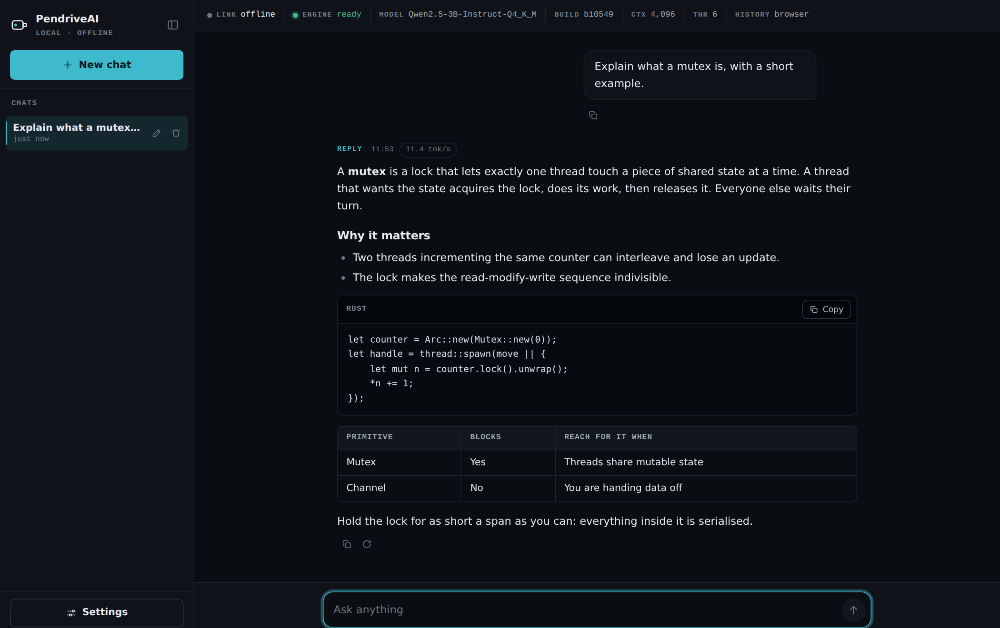
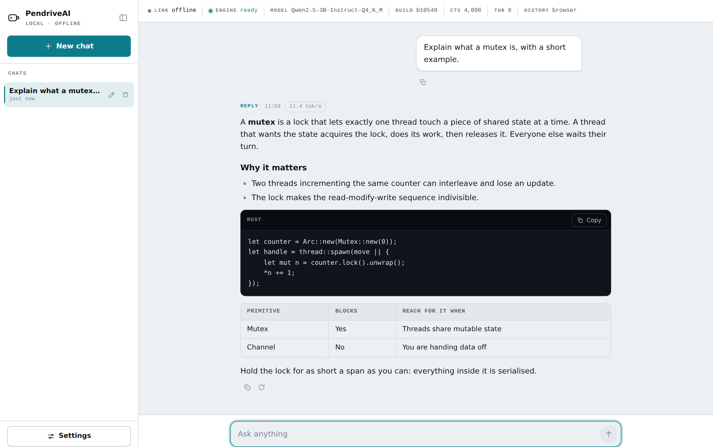

Your own AI, in your pocket.
A complete chat system on a USB drive: the model, the engine, the interface and the launcher. Plug it into any computer, run one file, and start typing. Nothing is installed and nothing leaves the machine.

A website served from your pocket
The drive carries a CPU build of llama.cpp, one GGUF model, a React production build and a small native launcher. The launcher starts the engine on 127.0.0.1, points it at the model and at the web build, waits for it to report healthy, then opens your browser. The page and the model API share one local port, and that port is the only thing the page is allowed to talk to.
Offline by construction
The page's own Content-Security-Policy limits it to 127.0.0.1. There is no account, no telemetry and no remote host it could reach even if a dependency tried.
Nothing installed
No Node.js, no Python, no Docker, no admin rights. Nothing is written to the registry or to PATH. Unplug the drive and the computer is exactly as you found it.
Chats travel with the drive
Conversations are written to the drive as JSON so they follow it between machines, with a browser-side copy for speed. Export and import are one click.
Honest about the machine
A readout strip shows the live engine state, the model file, the llama.cpp build, the real context size, the thread count and where history is being written.
Streaming, with a real stop
Server-Sent Events with token deltas, markdown, tables and fenced code blocks with copy buttons. Stop actually frees the engine slot rather than hiding the output.
No API bill
The model runs on the host CPU. Roughly 13 tokens per second on a normal laptop, forever, for the price of the pendrive.
Three steps, in this order
Formatting comes first, because the filesystem is what decides whether the launcher is executable on Linux at all.
Format the drive as exFAT
FAT32 cannot carry the executable bit, so Linux refuses to run the launcher from it. exFAT is readable by Linux, Windows and macOS.
Build and copy a release
One command fetches the runtimes, builds the UI and the launcher, downloads and checksums the model, and copies the result onto the drive.
./scripts/build-all.sh --target /media/you/PENDRIVEAI
Plug in and run
Run StartAI on Linux or StartAI.exe on Windows. The browser opens by itself once the engine is healthy.
The build is resumable. Every step skips itself when its output is already current, so an interrupted run costs nothing to repeat, and changing the interface rebuilds only the interface, not the 2.5 GB model download.
Light or dark, whichever the machine prefers
The UI follows the host system's theme, or you can pin one in Settings. It is keyboard-first: Enter sends, Shift+Enter adds a line, Escape closes dialogs, and every control is reachable by tab.

What is actually on the drive
| Engine | llama.cpp b10549, CPU build, trimmed to the files that are actually used |
|---|---|
| Model | Qwen3-4B-Instruct-2507-Q4_K_M by default, about 2.5 GB. Any GGUF that fits the drive works. |
| Interface | React 18 and Vite, one JS file and one CSS file, no webfont, served by llama-server itself |
| Launcher | Rust. Picks a free port, gates on available RAM, guards against a second instance, rotates logs, shuts the engine down cleanly. |
| Drive | 8 GB, formatted exFAT. About 2.6 GB used, so there is room for a second model. |
| Host machine | Linux x86_64 or Windows x64. 8 GB RAM comfortably; the launcher reduces context rather than letting a smaller machine thrash. |
| Measured speed | 13.2 tokens/second generation, 50.3 tokens/second prompt processing, on the development laptop |
| Licence | MIT for this project. The model is Apache-2.0 and is not included in the repository. |
Start with a blank drive
The full procedure, from formatting to the first answer, is about twenty minutes of waiting and four commands.